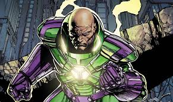
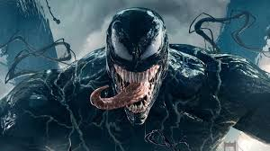
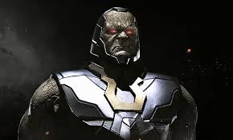
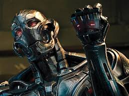
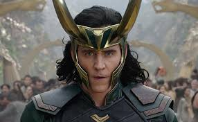
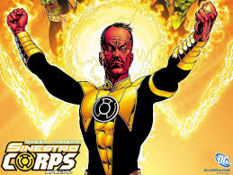
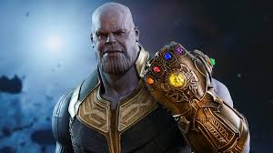
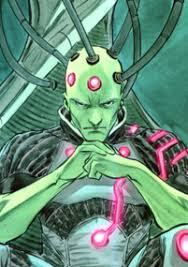

Magneto

Nació en una familia judía en Danzig (ahora Polonia) en el año 1928. Durante los '40, un joven Max Eisenhardt y su familia son perseguidos por los nazis durante el Holocausto. Su familia es exterminada, sin embargo Magneto logra sobrevivir gracias a la intervención de Wolverine, ya que era un soldado americano el cual salva a Magneto de los nazis. Finalmente Magneto es capturado y enviado a Auschwitz, donde es forzado a trabajar en el Sonderkommando.
En Auschwitz, el joven Max Eisenhardt conoce y se enamora de una gitana llamada Magda. Juntos sobreviven al Holocausto y escapan del campo donde fueron prisioneros para marcharse a vivir a la Unión Soviética. Se casan y tienen una hija, llamada Anya. Más tarde Anya fallece en un incendio, del cual Max no es capaz de salvarla por su inexperiencia y la interrupción de una hostil multitud de gente, esos hechos desencadenaron la furia de Eisenhardt. Se manifestaron sus poderes de forma incontrolable, de modo que asesinó a toda aquella multitud y a los ciudadanos circundantes. Atemorizada, Magda huye de Max, descubriendo meses más tarde que estaba nuevamente embarazada. Después llegaría a la montaña Wundagore para dar a luz a los gemelos mutantes Pietro (Quicksilver) y Wanda (Bruja Escarlata) Maximoff, para supuestamente fallecer tras el parto. Los niños son cuidados por Bova, una vaca super evolucionada debido a la experimentación del Alto Evolucionador, quien más tarde los entrega al líder gitano Django Maximoff.
Lex Luthor
Hombre Kriptonita
Mientras que el Luthor de la Edad de Oro (más tarde llamado Alexei Luthor) es simplemente un hombre amoral y brillante impulsado por un simple deseo de poder, a la encarnación de la Edad de Plata se le dio una personalidad y una historia de fondo más desarrolladas. El adolescente Lex Luthor es un aspirante a científico que reside en Smallville y admira mucho a su héroe local Superboy (Kal-El). Después de que Lex lo salva de la kryptonita, el Niño de Acero le construye un laboratorio privado en agradecimiento. Después de "miles de experimentos", el joven científico crea una forma de vida artificial de "protoplasma primitivo". Lleno de alegría, accidentalmente provoca un incendio químico en el laboratorio. Superboy apaga el fuego, derramando inadvertidamente otros químicos, destruyendo la forma de vida artificial y las notas de investigación acumuladas que llevaron a su creación. Los vapores químicos también hacen que el cabello de Lex se caiga por completo. Enfurecido por haber perdido años de investigación pero no dispuesto a aceptar la responsabilidad del incendio, Luthor concluye que Superboy saboteó intencionalmente su trabajo, celoso de los logros del joven científico y jura venganza.
Luthor crea grandiosos proyectos de ingeniería para demostrar su superioridad sobre el superhéroe, pero cada uno falla y causa problemas que Superboy luego resuelve. Luthor luego hace su primer intento de asesinar al Último Hijo de Krypton y falla. En lugar de llevarlo a las autoridades, Superboy declara que están incluso ahora y expresa su esperanza de que Lex se "arregle" y use su inteligencia para ayudar a la humanidad en lugar de intentar demostrar su superioridad o perder el tiempo buscando poder y venganza.
Venom
El traje negro
Venom es un personaje ficticio que aparece en los cómics estadounidenses publicados por Marvel Comics, comúnmente en asociación con Spider-Man. El personaje es un extraterrestre sensible simbionte con una forma amorfa, semi-líquido, que sobrevive mediante la unión con un huésped, por lo general humano. Esta forma de vida dual recibe poderes mejorados y generalmente se refiere a sí misma como «Venom». El Simbionte se introdujo originalmente como un traje alienígena viviente en The Amazing Spider-Man # 252 (mayo de 1984), con una primera aparición completa como Venom en The Amazing Spider-Man # 300 (mayo de 1988).
El primer anfitrión humano del simbionte Venom fue Spider-Man, quien finalmente descubrió su verdadera naturaleza nefasta y se separó de la criatura en The Amazing Spider-Man # 258 (noviembre de 1984) con un breve reencuentro cinco meses después en Web of Spider-Man # 1. El simbionte se fusionó con otros anfitriones, sobre todo Eddie Brock, su segundo y más infame anfitrión, con quien se convirtió en Venom y uno de los archienemigos de Spider-Man.
Darkseid
Darkseid es el gobernante tiránico del planeta Apokolips, cargo que obtuvo después de asesinar a su madre. Su obsesión es encontrar la Ecuación de la Anti-vida y usarla para gobernar el universo; esta meta también incluye conquistar su planeta rival, Nuevo Génesis, gobernado por el Alto Padre. Una guerra destructiva entre los dos mundos sólo se detuvo con un intercambio diplomático de los hijos de el Alto Padre y Darkseid.
Orión, el segundo hijo de Darkseid nacido de su esposa Tigra fue dejado al Alto Padre, mientras Darkseid recibió a Scott Free, quien después se convirtió en el mejor artista del escapismo Mr. Miracle. Esto resultó ser un fracaso para Darkseid, con su hijo biológico que creció valorando y defendiendo los ideales de Nuevo Génesis contra su padre, mientras que Scott Free ni bien creció escapó de Apokolips. El primogénito de Darkseid fue Kalibak el Destructor, que fue para él una decepción, y su tercer hijo fue Grayven.
Ultrón
Aunque Ultron aparece por primera vez en Avengers # 54 (1968), el personaje está disfrazado en la mayoría de los casos como Capucha Carmesí, con su rostro solo revelado en la última página del tema y no se le ha dado ningún nombre. El personaje dirige a los Maestros del Mal contra los Vengadores, habiendo hipnotizado a Edwin Jarvis para que trabaje para él. En la siguiente edición de Avengers # 55 (agosto de 1968), el personaje se identifica como Ultron-5, el Automatismo Viviente. En Avengers # 57–58 (octubre-noviembre de 1968), una secuencia de flashback reveló que Ultron creó al "synthezoide", Visión como arma para destruir a los Vengadores. La Visión, que tiene los patrones cerebrales de Hombre Maravilla, destruye a Ultron con la ayuda de los Vengadores.
Otros flashbacks revelan que Ultron es la creación de Hank Pym y se basa en los patrones cerebrales de Pym. El robot desarrolló gradualmente su propia inteligencia y se rebeló, y casi de inmediato desarrolla un complejo de Edipo, por lo que siente un odio irracional hacia Hank y demuestra un interés en la Avispa (Janet van Dyne). Reconstruyéndose, aprendiendo a encenderse y actualizándose cinco veces, Ultron luego hipnotiza y le lava el cerebro a su "padre" para que olvide que el robot alguna vez existió.
Joker
El Guasón

De forma similar a su creación, la biografía de Joker carece de una versión definitiva sobre sus orígenes y el personaje ha pasado por varios cambios desde su primera aparición en los años 1940. De acuerdo con la narración sospechosa del propio personaje: «A veces lo recuerdo de una manera y otras veces de manera diferente [...] Si voy a tener un pasado ¡Que sea de opción múltiple!» Sus explicaciones van desde el abuso infantil por parte de su padre, hasta la encarnación de un bufón que sirvió a un faraón.
En Detective Comics n° 168 (1951) se revela que en un pasado asumió la identidad del criminal Red Hood para robar una fábrica. Sin embargo, Batman frustra sus planes cuando aparece en el lugar y lo persigue hasta que el delincuente se introduce en un recipiente de sustancias corrosivas que le desfiguran el rostro y le tiñen de verde y blanco el cabello y la piel, respectivamente. Alternativamente en The Killing Joke se le describe como un asistente de una planta química que renuncia a su empleo para perseguir su sueño de convertirse en un afamado comediante. No obstante, su fracaso en esta ocupación pone en riesgo su estabilidad económica, de la cual depende también su esposa Jeannie, que en ese instante se encuentra embarazada. En un acto desesperado, acepta ayudar a un par de criminales a infiltrarse en el interior de la fábrica donde trabajaba, solo para descubrir luego que su cónyuge e hijo murieron durante un accidente doméstico. Aunque intenta retractarse del atraco, al final es forzado por los delincuentes a cumplir con su palabra. En lo sucesivo, la historia acontece de forma similar a la anterior publicación: Batman aparece y el hombre atemorizado se lanza a una tina de químicos que le confieren los rasgos físicos característicos de Joker. De hecho, las ediciones de Batman: Gotham Knights n° 50-55 sostienen que Edward Nygma atestiguó el secuestro y asesinato de la esposa de Joker con tal de obligarlo a cooperar con el robo del corporativo químico. Esta versión es secundada en otras publicaciones como El hombre que ríe —en donde Batman sospecha que Red Hood sobrevivió a la caída y se convirtió en Joker— y Batman n° 450 —Joker asume la identidad de Red Hood para recuperarse de los acontecimientos de «Una muerte en la familia», sin embargo su experiencia resulta traumática— y Death of the Family—.
Loki
Dios del engaño
Hace muchos años, Bor, gobernante de Asgard, estaba luchando contra los Gigantes de hielo, siguió a un gigante herido hasta un poderoso hechicero que lo estaba esperando. El hechicero lo atrapó sin darse cuenta, convirtiendo a Bor en nieve. Al maldecir a su hijo, Odín, llevó a los Asgardianos a la batalla contra los Gigantes de Escarcha y mató a Laufey, quien era el rey, en combate personal. Odín encontró un pequeño niño del tamaño de un Asgardiano, escondido dentro de la fortaleza principal de los Gigantes de hielo. El niño era Loki y Laufey lo había mantenido oculto a su gente debido a su vergüenza por el tamaño pequeño de su hijo. Odín tomó al niño, por una combinación de lástima, para apaciguar a su padre, y porque él era el hijo de un digno adversario asesinado en un combate honorable, y lo crio como su hijo junto a su hijo biológico thor, loki es considerado el dios de la trampa y de las mentiras, sus habilidades son: teletransportación, teleqinesis, cambio de forma, y la más poderosa, el poder de hipnotizar a la gente a su gusto para obligarlos a hacer cosas malas y macabras para lograr sus metas. (Mayo, Junio 2008)
A lo largo de su infancia y en la adolescencia, Loki estaba resentido por las diferencias en las que él y Thor fueron tratados por los ciudadanos de Asgard. Los asgardianos valoraban la gran fuerza, tenacidad y valentía en la batalla por encima de todas las cosas, y Loki era claramente inferior a su hermano Thor en esas áreas. Lo que le faltaba en tamaño y fuerza, sin embargo, lo compensaba en poder y habilidad, particularmente como hechicero. A medida que Loki creció hasta la edad adulta, su talento natural para causar travesuras se haría manifiesto y le valió un apodo como el "Dios de las mentiras y las travesuras"; su maldad con el tiempo se convirtió en malicia a medida que su hambre de poder y venganza se hizo más fuerte. Varias veces intentó usar trucos para deshacerse de Thor, como decirle que guarde un agujero en la pared que había hecho. Con el tiempo, su reputación pasó de ser un tramposo juguetón y travieso al "Dios del Mal". A lo largo de los siglos, Loki intentó en muchas ocasiones tomar el reinado de Asgard y destruir a Thor. Incluso ayudó al gigante Tormenta Ghan a escapar de Thor planeando obtener una deuda de él más tarde, y ayudó a otros enemigos de Asgard, planeando tomar Odin, que se había cansado de las travesuras de Loki, lo aprisionó mágicamente dentro de un árbol hasta que alguien derramó una lágrima por él. Loki finalmente se liberó haciendo que una hoja golpeara a Heimdall, el guardián del Bifrost, en el ojo, lo que le hizo derramar una lágrima. Loki compiló un extenso historial criminal en Asgard, y con frecuencia fue exiliado.7Conoció al hechicero Eldred, quien le enseñó magia negra. Le pagó a Eldred y luego se lo entregó al demonio Fuego Surtur.
Siniestro
Sinestro nació en el planeta Korugar en el sector espacial 1417. Su dedicación a preservar el orden se manifestó originalmente en su carrera anterior, un antropólogo especializado en reconstrucciones de ruinas de civilizaciones muertas hace mucho tiempo. Un día, mientras estaba en uno de esos sitios, una Linterna Verde llamada Prohl Gosgotha aterrizó de golpe en el sitio, herido y aparentemente muriendo. Rápidamente le dio su anillo a Sinestro, justo a tiempo para que Sinestro, que apenas entendía lo que el anillo podía hacer, se defendiera del perseguidor de la Linterna: un Weaponer de Qward; sin embargo, Sinestro tuvo que destruir las ruinas que había dedicado a restaurar para aplastar al Qwardian. Después, Gosgotha resultó estar aún vivo y le pidió que le devolviera el anillo para mantenerlo con vida el tiempo suficiente para obtener ayuda. Sinestro, sabiendo que esto significaría no ser un Green Lantern, lo dejó morir y se hizo cargo de su puesto. Los Guardianes no estaban al tanto de sus acciones.
Cuando Hal Jordan se unió al Green Lantern Corps, Sinestro fue asignado para ser su instructor. Jordan estaba horrorizado por los métodos totalitarios de su nuevo mentor, aunque Sinestro sostuvo que su gobierno feroz era necesario para proteger a su pueblo de las fuerzas alienígenas. Durante su entrenamiento, Jordan ayudó a Sinestro a repeler un intento de invasión de Korugar por los señores de la guerra alienígenas conocidos como los Khunds. Cuando Jordan pidió ayuda a los otros Linternas Verdes, la dictadura de Sinestro quedó expuesta y se vio obligado a comparecer ante los Guardianes para recibir un castigo. Katma Tui, el líder de un movimiento de resistencia korugariano que sentía que la "protección" de Sinestro impedía que su gente creciera como sociedad a través del contacto con otras razas alienígenas, fue reclutado como su reemplazo en el Cuerpo. Aunque Katma Tui finalmente se convirtió en una de las Linternas Verdes más respetadas, ella y el resto de Korugar inicialmente se resistieron a su nombramiento en el Cuerpo; Debido a las acciones de Sinestro, Korugar había llegado a considerar el símbolo del Green Lantern Corps como un emblema de terror y opresión.
Thanos
El titán
Thanos nació en el planeta Titán como el hijo de los Eternos Mentor (A'Lars) y Sui-San, y su hermano es Eros de Titán, también conocido como Starfox. Thanos lleva el gen Deviants, y como tal, comparte la apariencia física de la raza de los primos Eternos. Al nacer, su madre se sorprendió por su apariencia e intentó matarlo, debido a que creía que su hijo aniquilaría toda la vida en el universo, pero fue detenido por A'lars, el padre de Thanos.
Durante sus años escolares, Thanos era un pacifista y solo jugaba con su hermano Eros y sus mascotas. En la adolescencia, Thanos se había fascinado con el nihilismo y la muerte, adorando y finalmente enamorándose de la encarnación física de la muerte, la señora Muerte. Como adulto, Thanos aumentó su fuerza física y sus poderes a través de su conocimiento científico superior. También intentó crear una nueva vida para sí mismo al engendrar muchos niños y convertirse en pirata. No encuentra ninguna satisfacción en ninguno de los dos hasta que es visitado nuevamente por Señora Muerte, por quien asesina a su descendencia y su capitán pirata.
Brainiac
Apareciendo por primera vez en Action Comics # 242 (julio de 1958), Brainiac es un humanoide calvo de piel verde que llega a la Tierra y encoge varias ciudades, incluida Metrópolis, y las almacena en botellas con la intención de usarlas para restaurar el planeta que entonces no tiene nombre. El gobernó. Originalmente fue notable solo por haber reducido la botella de la ciudad de Kandor con su rayo que se contraía y por usar un campo de fuerza.
En apariciones posteriores en este período temprano, Brainiac se usó principalmente como un dispositivo de trama y no como un villano destacado del mes. La siguiente aparición de Brainiac fue principalmente detrás de escena, cuando intentó matar a Lois Lane y Lana Lang, lo que llevó a Superman a darle a Lois y a Lana superpoderes. Pero el villano permaneció invisible, excepto como un giro de la trama al final de la historia. La siguiente aparición de Brainiac fue en "Superman's Return to Krypton" en Superman # 141 (noviembre de 1960), en la que el villano robó la ciudad botella de Kandor, la única ciudad en Krypton que cree la advertencia de Jor-El de la condenación para el planeta, y que Ya había construido un arca espacial dentro de la ciudad para salvar a la población Cerebrito # 275 (abril de 1961), que mostraba al villano que planeaba derrotar a Superman, exponiéndolo tanto a la kryptonita roja como a la verde, dándole un tercer ojo en la parte posterior de la cabeza, obligándolo a usar varios sombreros para ocultarlo. Superman pronto derrotó a Brainiac y lo envió a un pasado lejano. Esta fue la primera aparición en la historia de los icónicos objetos diodo / electrodo rojo de Brainiac sobre su cabeza, que previamente había aparecido en la portada de su primera aparición en Action Comics.# 242 (julio de 1958), pero no se mostraron en la historia real. En "Superboy" # 106 (julio de 1963), un niño que Superman se encuentra con Brainiac, y se explica que Brainiac se ve igual debido a su vida útil de 200 años. Se revela que vino de un planeta llamado Bryak y, después de un viaje en el espacio, volvió a encontrar a todos muertos por una plaga. Tenía la intención de conseguir que la gente de otros planetas (en ciudades reducidas se amplíe con su rayo de crecimiento) para repoblar a Bryak, donde los gobernaría.